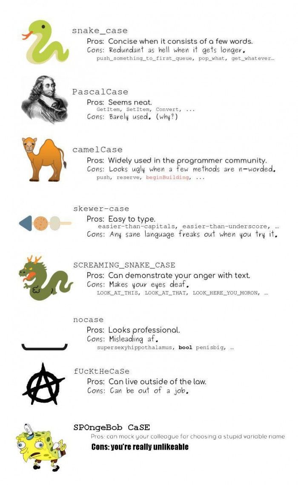

class: center, middle # Programmation procédurale : # bases <img height="200px" src="img/logo.png"> --- name: sommaire ## On parle de quoi ? 1. <a href="#main">Fonction principale</a> 2. <a href="#commentaires">Commentaires</a> 3. <a href="#impression">Impression</a> 4. <a href="#variable">Variables, types et constantes</a> 5. <a href="#formatage">Impression (suite) : les codes de formatage</a> 6. <a href="#largeur">Largeur, précision et alignement</a> 7. <a href="#operateurs">Opérateurs</a> 8. <a href="#divmod">Division entière et modulo</a> 9. <a href="#priorite">Priorité des opérateurs et conversions</a> 10. <a href="#lecture">Lecture</a> 11. <a href="#synthese">Exercices de synthèse</a> --- name: main # Fonction principale ``` ┌─── * Fonction principale │ instruction1 │ instruction2 │ instruction3 │ .... └────────── ``` ```c void main(void){ instruction1 instruction2 instruction3 } ``` → `main` est le **point d'entrée** du programme → `instruction1` est la première instruction (le programme commence) → `instruction3` est la dernière instruction (le programme termine) --- name: commentaires ## Commentaires ### Sur une seule ligne ```c // Déclaration et affectation en C int a; // déclaration d'une variable de type entière a = 3 // affectation ``` ### Sur plusieurs lignes ```c /* Programme calculant la moyenne d'une classe */ void main(void) ``` --- name: impression ## Impression L'impression sur l'écran se fait via la fonction `printf` ou `printf_s` ```c #include <stdio.h> void main(void){ printf("Bonjour !"); printf_s("Bonjour !"); } ``` → `stdio.h` est la librairie standard pour les entrées/sorties --- name: variable ## Variables Exercice : combien y a-t-il de variable ? ``` ┌─── * Calcul montant commande │ obtenir quantite │ montant = quantite * 2.5 │ sortir montant └────────── ``` --- ## Variables Une **variable** est une **zone mémoire** qui **stocke de l'information**. Une variable est **déclarée** en spécifiant : 1. son type 2. son nom 3. sa valeur (via une affectation) → la valeur peut être spécifiée en même temps que la déclaration ou après (mais pas avant !). --- ### Déclaration d'une variable : le nom Le nom d'une variable : * peut être constitué de lettres, chiffres et/ou _ * commence par une lettre ou _ * est "case sensitive" : distinction entre une minuscule et une majuscule Bonnes pratiques : * le nom d'une variable ne commence jamais par une majuscule * écriture en "camelCase" Exercices : quels sont les noms corrects/incorrects ? * `Chif Affaire` * `_ChifAffaire` * `1NbEtudiant` * `chifAffaire1` * `chifaffaire` --- ### Déclaration d'une variable : le nom <p></p> --- ### Déclaration d'une variable : le type En c, il existe 4 grands types, eux-même constitués de variants : ### Le type **entier** * `short in` ou `short` (2 octets) * `int` (4 octets) * `long int` ou `long` (4 octets) ### Le type **réel** * `float` (4 octets) * `double` (8 octets) * `long double` (16 octets) ### Le type **caractère** * `char` (1 octet) ### Le type **booléen** (dans `stdbool.h`) * `bool` (`true` / `false`) --- ### Déclaration d'une variable : le type ```c int nbEtudiants; // variable de type entier double pourcentageMoyen; // variable de type réel char finPhrase; // variable de type caractère bool estComplet; // variable de type booléen ``` --- name: capacite ### Le type détermine la capacité Un type, c'est un **nombre d'octets**, donc un **nombre de valeurs possibles**. | Type | Taille | Valeurs | | --- | --- | --- | | `char` | 1 octet | -128 à 127 | | `short` | 2 octets | -32 768 à 32 767 | | `int` | 4 octets | -2 147 483 648 à **2 147 483 647** | | `long long` | 8 octets | environ -9,2·10¹⁸ à 9,2·10¹⁸ | | `float` | 4 octets | ~7 chiffres significatifs | | `double` | 8 octets | ~15 chiffres significatifs | ```c int i = 2147483648; // dépassement : int s'arrête à 2147483647 ``` → Le **dépassement de capacité** ne provoque pas d'erreur : la valeur "boucle" et devient négative. → Un `float` ne stocke pas une valeur exacte : `0.1 + 0.2 != 0.3`. On ne compare **jamais** deux réels avec `==`. --- ### Le type détermine la conversion Affecter une valeur d'un type à une variable d'un autre type provoque une **conversion implicite**. ```c int a = 3.14; // a vaut 3 : la partie décimale est PERDUE (troncature, pas d'arrondi) float b = 42; // b vaut 42.0 : conversion sans perte char h = 123; // h vaut le caractère de code ASCII 123, c'est-à-dire '{' double g = 10; // g vaut 10.0 ``` → La troncature ne prévient pas. C'est une erreur de logique classique. → Un `char` **est** un petit entier : les deux écritures sont interchangeables. --- name: choisirtype ### Exercice : choisir le bon type Un `int` pour ce qui se **compte**, un `float`/`double` pour ce qui se **mesure**, un `char` pour un **caractère unique**, un `bool` pour une réponse par **oui ou non**. | La variable contient... | Valeur initiale | Déclaration | | --- | --- | --- | | Le nombre de joueurs inscrits | — | `int nbJoueurs;` | | Le temps du meilleur tour (s) | 12.48 | `float meilleurTour = 12.48;` | | La lettre de l'équipe | A | `char lettreEquipe = 'A';` | | Si le match a été gagné | non | `bool estGagne = false;` | | La taille d'un joueur (m) | — | `float taille;` | | Le nombre de spectateurs cumulés | — | `long nbSpectateurs;` | | Le numéro de maillot | 10 | `int numMaillot = 10;` | | La distance parcourue (km) | — | `float distance;` | | La température le jour du match | — | `float temperature;` | | Le montant des cotisations | — | `double montantCotisations;` | → Choisir le bon type, c'est déjà résoudre la moitié du problème. --- ### Déclaration d'une variable : la valeur Lorsqu'on "donne" une valeur à une variable, on parle **d'affectation** ou **d'assignation**. Une affectation/assignation peut se faire : * en même temps que la déclaration ```c int nbEtudiants = 20; double pourcentageMoyen = 0.2; char finPhrase = 'c'; bool estComplet = false; ``` * dans la suite du programme ```c int nbEtudiants; double pourcentageMoyen; char finPhrase; bool estComplet; nbEtudiants = 20; pourcentageMoyen = 0.2; finPhrase = 'c'; estComplet = false; ``` --- name: declfautives ### Exercice : corriger des déclarations ```c int a = 3.14; // compile, mais a vaut 3 → float a = 3.14; float b = 42; // correct : b vaut 42.0 char c = "A"; // ERREUR : "A" est une chaîne → char c = 'A'; double d = 5.5; // correct char e = 'Z'; // correct float f = 3.14; // correct (3.14f pour éviter l'avertissement) double g = 10; // correct : g vaut 10.0 char h = 123; // correct : h contient '{' int i = 2147483648; // dépassement de capacité → long long i = ...; float j = 5.67.8; // ERREUR de syntaxe : deux points décimaux ``` Trois questions à se poser devant chaque déclaration : 1. Le type peut-il **contenir** cette valeur ? 2. La valeur est-elle écrite avec la bonne **syntaxe** ? (`'A'` et non `"A"`) 3. Y a-t-il une **perte** silencieuse ? --- ### Déclaration d'une constante Une **constante** est une variable dont sa **valeur ne peut pas changer** pendant toute l'exécution du programme. → on utilise le mot-clé `const` → toute affectation après la déclaration sera rejetée par le compilateur. ```c const int n = 20; // n contient la valeur 20 n = 10; // erreur ! ``` ```c const int n = 20; // n contient la valeur 20 const int n = 10; // erreur ! ``` --- name: mathh ### Constantes prédéfinies : `<math.h>` ```c #include <math.h> void main(void){ float rayon = 3; printf("Perimetre : %.2f\n", 2 * M_PI * rayon); printf("Aire : %.2f\n", M_PI * rayon * rayon); } ``` | Élément | Rôle | | --- | --- | | `M_PI` | la constante π | | `sqrt(x)` | racine carrée de x | | `pow(x, n)` | x élevé à la puissance n | | `fabs(x)` | valeur absolue d'un réel | **Pourquoi une constante plutôt qu'une variable ?** → Elle ne peut pas être modifiée par erreur au milieu du programme. → Elle porte un **nom** : `M_PI` se relit mieux que `3.14159265`. → Elle se corrige **en un seul endroit** (un taux de TVA, un prix, un seuil). --- ### Affectation Une affectation a toujours la forme `maVariable = monExpression` Une expression peut prendre plusieurs formes : * une valeur ```c int maVariable = 1; ``` * une opération ```c int maVariable = 10 + 15; ``` * une variable ```c int maVariable = 1; int monAutreVariable = 2; maVariable = monAutreVariable; maVariable = monAutreVariable + 5; ``` --- name: formatage ## Impression (suite) ```c int nbInscrits = 100; printf("Nombre d'inscrits = %d", nbInscrits); ``` ```c double longueur = 5.5; printf("Perimetre du carré : %.2f m", 4 * longueur); ``` ```c int nbInscritsInfo = 100; int nbInscritsSciences = 150; printf("Nombre d'inscrits en info : %d\n", nbInscritsInfo); printf("Nombre d'inscrits en sciences : %d\n", nbInscritsSciences); ``` ```c int nbInscritsInfo = 100; int nbInscritsSciences = 150; printf("Nombre d'inscrits en info : %d\nNombre d'inscrits en sciences : %d\n", nbInscritsInfo, nbInscritsSciences); ``` --- ## Impression (suite) <style type="text/css"> .tg {border-collapse:collapse;border-spacing:0;float: left;margin: 10px;} .tg td{border-color:black;border-style:solid;border-width:1px;font-family:Arial, sans-serif;font-size:14px; overflow:hidden;padding:10px 5px;word-break:normal;} .tg th{border-color:black;border-style:solid;border-width:1px;font-family:Arial, sans-serif;font-size:14px; font-weight:normal;overflow:hidden;padding:10px 5px;word-break:normal;} .tg .tg-0pky{border-color:inherit;text-align:left;vertical-align:top} .tg .tg-dvpl{border-color:inherit;text-align:right;vertical-align:top} </style> <table class="tg"> <thead> <tr> <th class="tg-0pky">Type</th> <th class="tg-0pky">Code de formatage</th> </tr> </thead> <tbody> <tr> <td class="tg-0pky">`short`</td> <td class="tg-dvpl">%hd</td> </tr> <tr> <td class="tg-0pky">`int`</td> <td class="tg-dvpl">%d</td> </tr> <tr> <td class="tg-0pky">`long`</td> <td class="tg-dvpl">%ld</td> </tr> <tr> <td class="tg-0pky">`float`</td> <td class="tg-dvpl">%f</td> </tr> <tr> <td class="tg-0pky">`double`</td> <td class="tg-dvpl">%lf</td> </tr> <tr> <td class="tg-0pky">`long double`</td> <td class="tg-dvpl">%Lf</td> </tr> <tr> <td class="tg-0pky">`char`</td> <td class="tg-dvpl">%c</td> </tr> </tbody> </table> <table class="tg"> <thead> <tr> <th class="tg-0pky">Action</th> <th class="tg-0pky">Ordre de contrôle</th> </tr> </thead> <tbody> <tr> <td class="tg-0pky">passage à la ligne</td> <td class="tg-dvpl">\n</td> </tr> <tr> <td class="tg-0pky">tabulation</td> <td class="tg-dvpl">\t</td> </tr> <tr> <td class="tg-0pky">bip sonore</td> <td class="tg-dvpl">\a</td> </tr> </tbody> </table> <table class="tg"> <thead> <tr> <th class="tg-0pky">Affichage</th> <th class="tg-0pky">Pattern</th> </tr> </thead> <tbody> <tr> <td class="tg-0pky">\</td> <td class="tg-dvpl">\\\</td> </tr> <tr> <td class="tg-0pky">%</td> <td class="tg-dvpl">%%</td> </tr> <tr> <td class="tg-0pky">"</td> <td class="tg-dvpl">\"</td> </tr> </tbody> </table> --- name: largeur ## Largeur, précision et alignement Entre le `%` et la lettre du type, on peut préciser **comment** afficher. ``` % - 8 .2 f │ │ │ │ └── le type │ │ │ └────── précision : 2 décimales │ │ └─────────── largeur minimale : 8 caractères │ └─────────────── alignement à gauche (par défaut : à droite) └────────────────── début du code de formatage ``` ```c float distance = 1234.5678; printf("|%10.1f|\n", distance); // | 1234.6| printf("|%-10.1f|\n", distance); // |1234.6 | printf("|%.3f|\n", distance); // |1234.568| printf("|%f|\n", distance); // |1234.567800| (6 décimales par défaut) ``` ```c int jour = 3, mois = 7; printf("Echeance : %02d/%02d/2026", jour, mois); // Echeance : 03/07/2026 ``` → Le `0` devant la largeur complète avec des zéros au lieu d'espaces. → La précision **arrondit** à l'affichage, elle ne modifie pas la variable. --- ## Aligner un tableau de valeurs ```c float note1 = 14.5, note2 = 11.25; float moyenne = (note1 + note2) / 2; printf("Note 1 : %5.2f\n", note1); printf("Note 2 : %5.2f\n", note2); printf("Moyenne : %5.2f\n", moyenne); ``` ``` Note 1 : 14.50 Note 2 : 11.25 Moyenne : 12.88 ``` → Une largeur **identique** sur chaque ligne : les virgules s'alignent verticalement. → La largeur est un **minimum** : une valeur plus longue n'est jamais tronquée. ```c char symbole = '#'; printf("%c%c%c\n", symbole, symbole, symbole); // ### printf("%3c|\n", symbole); // #| ``` --- name: echappement ## Afficher un caractère spécial Certains caractères ne peuvent pas s'écrire tels quels dans une chaîne. | Je veux afficher | J'écris | Pourquoi | | --- | --- | --- | | un retour à la ligne | `\n` | | | une tabulation | `\t` | | | `"` | `\"` | le `"` seul fermerait la chaîne | | `\` | `\\` | le `\` seul annonce un caractère spécial | | `%` | `%%` | le `%` seul annonce un code de formatage | ```c printf("Fichier : \"rapport.txt\"\n"); // Fichier : "rapport.txt" printf("Chemin : C:\\Documents\\Ecole"); // Chemin : C:\Documents\Ecole ``` ```c int reduction = 30; printf("Soldes : -%d%% sur tout le magasin !", reduction); // Soldes : -30% sur tout le magasin ! printf("Soldes : -%d% sur tout le magasin !", reduction); // FAUX : "% s" est lu comme un code ``` --- name: printferr ## `printf` : les erreurs classiques Soient `int a = 10; float b = 5.565; char c = 'A';` ```c printf("Valeur de a: %d\n", a); // correct → Valeur de a: 10 printf("Valeur de b: %d\n", b); // %d avec un float : affichage aberrant → %f printf("Valeur de c: %c\n", c); // correct → Valeur de c: A printf("Valeur de d: %f\n", d); // d n'est pas déclarée : erreur de compilation printf("Somme a+b: %c\n", a + b); // a + b est un float → %f printf("Valeur de c : %f\n", c); // un char avec %f → %c (ou %d pour le code ASCII) printf("Valeur de b: %.2f\n", b); // correct → Valeur de b: 5.57 (arrondi) printf("Valeur de b: %c\n", b); // un float avec %c → %f ``` Trois règles : 1. **Un code de formatage = un argument**, dans le même ordre. 2. Le code doit correspondre **exactement** au type (`%d` int, `%f` float/double, `%c` char). 3. Ne jamais oublier la **virgule** entre la chaîne et les arguments. ```c printf("Il reste %d essais.\n" compteur); // virgule manquante : erreur de compilation ``` --- name: predire ## Exercice : prédire un affichage ```c int heures = 9, minutes = 5; printf("Rendez-vous a %dh%d le %d mai.", heures, minutes); ``` → Trois codes de formatage, **deux** arguments : le troisième affiche une valeur imprévisible. ```c char note = 'B'; printf("Tu obtiens la note %s avec %d points.", note, 78); ``` → `%s` attend une **chaîne**, pas un `char` : le programme peut planter. --- ## Exercice : prédire un affichage ```c char prenom = 'Tom'; printf("%c a %d ans.", prenom, 16); ``` → Un `char` contient **un seul** caractère : `'Tom'` n'a pas de sens. ```c int annee = 2026; char classe = 5; printf("Annee %d - classe %c", annee, classe); ``` → `classe` contient le **code ASCII 5** (un caractère de contrôle invisible), et non le chiffre `'5'`. Il fallait écrire `char classe = '5';` --- name: operateurs ## Opérateurs ### Opérateurs arithmétiques * Addition : `+` ```c int maVariable; int monAutreVariable = 2; maVariable = monAutreVariable + 5; ``` * Soustraction : `-` ```c int maVariable = 1 - 2; ``` * Multiplication : `*` ```c int maVariable; int monAutreVariable = 2; maVariable = monAutreVariable * 2; ``` --- ### Opérateurs arithmétiques * Division : `/` ```c int maVariable; int monAutreVariable = 2; maVariable = monAutreVariable / 2; ``` * Modulo (reste de la division d'un entier par un entier) : `%` ```c int nombre = 15; int reste; reste = 15 % 2; // reste contient la valeur 1 reste = 15 % 3; // reste contient la valeur 0 reste = 15 % 4; // reste contient la valeur 3 ``` --- name: divmod ### Décomposer une grandeur avec `/` et `%` `/` donne le **quotient**, `%` donne le **reste**. À eux deux, ils suffisent à décomposer n'importe quelle grandeur, **sans aucune condition ni boucle**. ```c int total = 7385; // une durée en secondes int heures = total / 3600; // 2 int minutes = (total % 3600) / 60; // 3 int secondes = total % 60; // 5 printf("%d h %d min %d s", heures, minutes, secondes); // 2 h 3 min 5 s ``` ```c int n = 427; // un nombre de trois chiffres int centaines = n / 100; // 4 int dizaines = (n / 10) % 10; // 2 int unites = n % 10; // 7 ``` Le schéma est toujours le même : → `/ taille` donne **combien de fois** l'unité rentre, → `% taille` donne **ce qu'il reste** pour l'unité suivante. --- ### Le même schéma : rendre la monnaie ```c int montant = 287; // en centimes int p200 = montant / 200; montant %= 200; int p100 = montant / 100; montant %= 100; int p50 = montant / 50; montant %= 50; int p20 = montant / 20; montant %= 20; int p10 = montant / 10; montant %= 10; int p5 = montant / 5; montant %= 5; int p2 = montant / 2; montant %= 2; int p1 = montant; ``` ``` 2 euros : 1 20 cent : 1 2 cent : 1 1 euro : 0 10 cent : 1 1 cent : 0 50 cent : 1 5 cent : 1 ``` → On traite les pièces **de la plus grande à la plus petite** : c'est ce qui garantit le nombre minimal de pièces. → `montant %= 200` s'écrit aussi `montant = montant % 200`. --- ### Type des variables en cas de division Quelle sera la sortie ? ```c int nb1, nb2, resultatDivisionEntiere; double resultatDivisionReelle; nb1 = 100; nb2 = 30; resultatDivisionReelle = nb1/nb2; printf("%lf",resultatDivisionReelle); ``` --- ### Type des variables en cas de division En C, l'opérateur de division appliqué à deux entiers, exécute la division entière : ```c float a = 1 / 3 // a contient 0 (partie entière de 0.33333...) ``` Pour "forcer" la division avec plus de précision, il faut utiliser le **casting** : ```c float a = (float) 1 / 3 // a contient 0.33333... ``` ... ou donner explicitement un réel : ```c float a = 1.0 / 3 // a contient 0.33333... ``` --- name: moyenne ### Le piège de la moyenne ```c int n1 = 70, n2 = 70, n3 = 71; float moyenne = (n1 + n2 + n3) / 3; printf("%.2f", moyenne); // affiche 70.00 et non 70.33 ! ``` Pourquoi ? `(70 + 70 + 71)` est un **entier**, `3` est un **entier** : la division est **entière**. Le résultat `70` n'est converti en réel qu'**après**, quand il est trop tard. Trois corrections possibles : ```c float moyenne = (float)(n1 + n2 + n3) / 3; // on convertit le numérateur float moyenne = (n1 + n2 + n3) / 3.0; // le dénominateur devient réel float moyenne = (n1 + n2 + n3) / (float)3; // idem ``` → Attention, ceci **ne corrige rien** : ```c float moyenne = (float)((n1 + n2 + n3) / 3); // la division entière a déjà eu lieu ``` → Règle : la conversion doit avoir lieu **avant** la division, pas après. --- name: composee ### Affectation composée Ces écritures sont des **raccourcis**, pas de nouvelles opérations. | Écriture | Équivaut à | | --- | --- | | `a += 3` | `a = a + 3` | | `a -= 3` | `a = a - 3` | | `a *= 3` | `a = a * 3` | | `a /= 3` | `a = a / 3` | | `a %= 3` | `a = a % 3` | → Attention avec `/=` et `%=` : le type des opérandes décide, comme toujours. ```c float x = 7; x /= 2; // x = 3.5 (7 est déjà dans un float) int y = 7; y /= 2; // y = 3 (division entière) ``` --- ### Exercice : échanger deux valeurs ```c int a = 5, b = 2; a = a + b; // a = 7, b = 2 b = a - b; // a = 7, b = 5 a = a - b; // a = 2, b = 5 ← les deux valeurs ont été échangées ! a += 3; // a = 5, b = 5 b *= a; // a = 5, b = 25 ``` | Instruction | a | b | | --- | --- | --- | | `int a = 5, b = 2;` | 5 | 2 | | `a = a + b;` | 7 | 2 | | `b = a - b;` | 7 | 5 | | `a = a - b;` | 2 | 5 | | `a += 3;` | 5 | 5 | | `b *= a;` | 5 | 25 | --- ### Exercice : tracer l'état des variables ```c int a = 4, b = 0; b = a++; // b prend 4, PUIS a devient 5 → a = 5, b = 4 b = ++a; // a devient 6, PUIS b prend 6 → a = 6, b = 6 a -= b / 2; // b / 2 = 3 → a = 6 - 3 → a = 3, b = 6 b %= 3; // b = 6 % 3 → a = 3, b = 0 a *= b + 1; // a = 3 * (0 + 1) → a = 3, b = 0 ``` | Instruction | a | b | | --- | --- | --- | | `int a = 4, b = 0;` | 4 | 0 | | `b = a++;` | 5 | 4 | | `b = ++a;` | 6 | 6 | | `a -= b / 2;` | 3 | 6 | | `b %= 3;` | 3 | 0 | | `a *= b + 1;` | 3 | 0 | → Une ligne à la fois, une colonne par variable : c'est la seule méthode fiable. --- name: priorite ### Priorité des opérateurs Du plus prioritaire au moins prioritaire : <table> <thead><tr><th>Priorité</th><th>Opérateurs</th></tr></thead> <tbody> <tr><td>1</td><td><code>( )</code></td></tr> <tr><td>2</td><td><code>(type)</code> (casting), <code>++</code>, <code>--</code>, <code>!</code></td></tr> <tr><td>3</td><td><code>*</code>, <code>/</code>, <code>%</code></td></tr> <tr><td>4</td><td><code>+</code>, <code>-</code></td></tr> <tr><td>5</td><td><code><</code>, <code><=</code>, <code>></code>, <code>>=</code></td></tr> <tr><td>6</td><td><code>==</code>, <code>!=</code></td></tr> <tr><td>7</td><td><code>&&</code></td></tr> <tr><td>8</td><td><code>||</code></td></tr> <tr><td>9</td><td><code>=</code>, <code>+=</code>, <code>-=</code>, <code>*=</code>, <code>/=</code>, <code>%=</code></td></tr> </tbody> </table> ```c 2 + 3 * 4 % 5 // * et % sont prioritaires et se lisent de gauche à droite : // 3 * 4 = 12, 12 % 5 = 2, 2 + 2 = 4 ``` → En cas de doute : **des parenthèses**. Elles ne coûtent rien et se relisent. --- name: expressions ### Exercice : prédire type et valeur (1/2) | Expression | Type | Valeur | | --- | --- | --- | | `7 / 2` | int | 3 | | `7 % 2` | int | 1 | | `7.0 / 2` | double | 3.5 | | `5 / 2.0` | double | 2.5 | | `(float)7 / 2` | float | 3.5 | | `(float)(7 / 2)` | float | 3.0 | | `-7 / 2` | int | -3 | | `-7 % 2` | int | -1 | | `1 / 3 * 3` | int | 0 | → Une division n'est réelle que si **au moins un** de ses deux opérandes est réel. --- ### Exercice : prédire type et valeur (2/2) | Expression | Type | Valeur | | --- | --- | --- | | `(int)5.9` | int | 5 | | `(int)(5.9 + 0.5)` | int | 6 | | `9 / 2 / 2` | int | 2 | | `10 % 3 % 2` | int | 1 | | `2 + 3 * 4 % 5` | int | 4 | | `'A' + 1` | int | 66 | | `(char)('A' + 1)` | char | `'B'` | | `'z' - 'a'` | int | 25 | → `(int)x` **tronque**, il n'arrondit pas. `(int)(x + 0.5)` est l'astuce classique pour arrondir. --- name: charentier ### Un caractère est un entier ```c char c = 'A'; printf("%c\n", c); // A printf("%d\n", c); // 65 ← son code ASCII printf("%X\n", c); // 41 ← son code en hexadécimal ``` On peut donc **calculer** sur des caractères : ```c char suivant = 'A' + 1; // 'B' int ecart = 'z' - 'a'; // 25 char minuscule = 'A' + 32; // 'a' (32 sépare les majuscules des minuscules) int chiffre = '7' - '0'; // 7 (du caractère au nombre) ``` | Caractère | Code ASCII | | --- | --- | | `'0'` ... `'9'` | 48 ... 57 | | `'A'` ... `'Z'` | 65 ... 90 | | `'a'` ... `'z'` | 97 ... 122 | → Ce sujet est développé dans le module **02 - les caractères**. --- ### Incrémentation * Post-incrémentation ```c int n = 1; n++; ``` * Pré-incrémentation ```c int n = 1; ++n; ``` Quelle sera la sortie ? ```c int nombre = 10; int nombrePlusUn; ``` ```c nombrePlusUn = ++nombre; printf("nombre : %d\nnombrePlusUn :%d\n", nombre, nombrePlusUn); ``` ```c nombrePlusUn = nombre++; printf("nombre : %d\nnombrePlusUn :%d\n", nombre, nombrePlusUn); ``` --- ### Décrémentation * Post-décrémentation ```c int n = 1; n--; ``` * Pré-décrémentation ```c int n = 1; --n; ``` Quelle sera la sortie ? ```c int nombre = 10; int nombreMoinsUn; ``` ```c nombreMoinsUn = --nombre; printf("nombre : %d\nnombreMoinsUn :%d\n", nombre, nombreMoinsUn); ``` ```c nombreMoinsUn = nombre--; printf("nombre : %d\nnombreMoinsUn :%d\n", nombre, nombreMoinsUn); ``` --- name: lecture ## Lecture La lecture se fait via le clavier en utilisant la fonction `scanf` ou `scanf_s` qui se trouvent dans la librairie `stdio.h`. ```c int nbEtudiants; scanf_s("%d", &nbEtudiants); ``` ```c int nbEtudiants; printf("Entrez le nombre d'inscrits : "); scanf_s("%d", &nbEtudiants); ``` ```c int abscisse, ordonnee; printf("Entrez les coordonnées (x,y) :"); scanf_s("(%d,%d)", &abscisse, &ordonnee); ``` → Ne pas oublier l'opérateur d'adressage `&` ! --- name: scanferr ## `scanf` : les erreurs classiques Soient `int a; float b; char c;` ```c scanf("%d", a); // le & est OUBLIÉ : le programme plante scanf("%f", &a); // a est un int → %d scanf("%c", &b); // b est un float → %f scanf("%d %d", &a, &b); // b est un float → "%d %f" scanf("%s", &c); // c est un char, pas une chaîne → " %c" ``` → Une erreur de `&` ou de code de formatage ne se voit **pas** à la compilation : le programme plante ou lit n'importe quoi. --- ### `scanf` : les trois règles 1. **Toujours** l'opérateur d'adressage `&` devant la variable (sauf pour un tableau). 2. Le code de formatage doit correspondre **exactement** au type de la variable. 3. Autant de codes que de variables, dans le **même ordre**. ```c int a; float b; printf("Un entier puis un reel : "); scanf("%d %f", &a, &b); ``` ```c char c; scanf(" %c", &c); // l'espace avant %c ignore les blancs en attente ``` → Cet espace avant `%c` évite le problème du **tampon**, développé dans le module 02. --- name: synthese ## Exercices de synthèse L'école organise un souper : menu enfant (moins de 12 ans) à 8,50 € et menu adulte à 14 €. Écrivez le programme correspondant au dialogue suivant. ``` Bonjour, merci de participer a notre souper. Combien d'adultes prendront part au souper ? > 1 Combien d'enfants prendront part au souper ? > 1 Prix a payer : 22.50 euro ``` --- ## Exercices de synthèse ```c #include <stdio.h> void main(void){ int nbAdultes, nbEnfants; float total; printf("Bonjour, merci de participer a notre souper.\n"); printf("Combien d'adultes prendront part au souper ?\n> "); scanf("%d", &nbAdultes); printf("Combien d'enfants prendront part au souper ?\n> "); scanf("%d", &nbEnfants); total = nbAdultes * 14 + nbEnfants * 8.5; printf("Prix a payer : %.2f euro\n", total); } ``` → `total` est un `float` et `8.5` est écrit en réel : sinon la multiplication serait entière. --- ## Exercices de synthèse Écrivez un programme qui **échange** le contenu de deux entiers saisis, et qui affiche leur valeur avant et après l'échange. ```c #include <stdio.h> void main(void){ int x, y, temp; printf("Valeur de X : "); scanf("%d", &x); printf("Valeur de Y : "); scanf("%d", &y); printf("la variable X vaut : %d ... la variable Y vaut : %d\n", x, y); temp = x; // on met X de côté x = y; // X reçoit Y y = temp; // Y reçoit l'ancien X printf("la variable X vaut : %d ... la variable Y vaut : %d\n", x, y); } ``` → Sans `temp`, `x = y;` détruirait `x` avant qu'on ait pu le récupérer. Variante sans variable intermédiaire : `x += y; y = x - y; x -= y;` --- ## Exercices de synthèse Une durée en secondes est saisie : affichez-la en heures / minutes / secondes. ```c #include <stdio.h> void main(void){ int total, heures, minutes, secondes; printf("Duree en secondes ?\n> "); scanf("%d", &total); heures = total / 3600; minutes = (total % 3600) / 60; secondes = total % 60; printf("%d h %d min %d s\n", heures, minutes, secondes); } ``` ``` Duree en secondes ? > 7385 2 h 3 min 5 s ``` --- ## Exercices de synthèse Créez un programme qui demande à l'utilisateur d'entrer le nombre d'élèves inscrits dans la section informatique. Le programme affichera ensuite : "Il y a X inscrits en informatique". --- ## Exercices de synthèse Créez un programme qui demande à l'utilisateur d'entrer le nombre d'élèves inscrits dans la section informatique. Le programme affichera ensuite : "Il y a X inscrits en informatique". ```c #include <stdio.h> void main (void){ int nbEleves; printf("Nombre d'élèves en informatique : "); scanf("%d", &nbEleves); printf("Il y a %d inscrits en informatique",nbEleves); system("pause"); } ``` --- ## Exercices de synthèse Corrigez les erreurs du programme suivant. ``` Void main (double){ int nombre int nombredouble; printf("Nombre :); scanf("%lf", nombre); nombreDouble = 2 * Nombre; printf("Double du nombre :", nombreDouble); } ``` --- ## Exercices de synthèse Corrigez les erreurs du programme suivant. ```c #include <stdio.h> // 0. include manquant void main(void){ // 1. "Void" → void 2. (double) → (void) int nombre; // 3. ; manquant int nombreDouble; // 4. nombredouble ≠ nombreDouble (casse !) printf("Nombre : "); // 5. guillemet fermant manquant scanf("%d", &nombre); // 6. %lf → %d (nombre est un int) 7. & manquant nombreDouble = 2 * nombre; // 8. Nombre → nombre printf("Double du nombre : %d", nombreDouble); // 9. code de formatage manquant } ``` → Neuf erreurs sur huit lignes : sept sont refusées par le compilateur, deux (la casse et le `&`) passeraient parfois inaperçues. --- ## Pour vous entraîner Le chapitre **« Exercices pratiques, premières instructions »** du livret reprend chacun de ces points : | Section du livret | Slides | | --- | --- | | Déclarer et typer les variables | <a href="#capacite">capacité</a>, <a href="#choisirtype">choisir le type</a>, <a href="#declfautives">déclarations fautives</a> | | Afficher et saisir | <a href="#formatage">formatage</a>, <a href="#printferr">erreurs printf</a>, <a href="#scanferr">erreurs scanf</a> | | Les opérateurs et les conversions | <a href="#composee">affectation composée</a>, <a href="#priorite">priorité</a>, <a href="#expressions">expressions</a> | | Lire et déboguer un programme | <a href="#largeur">largeur</a>, <a href="#echappement">échappement</a>, <a href="#predire">prédire</a> | | Premiers programmes complets | <a href="#synthese">synthèse</a> | | Division entière et modulo | <a href="#divmod">`/` et `%`</a>, <a href="#moyenne">le piège de la moyenne</a> | | Formules et calculs | <a href="#mathh">`math.h`</a> | | Le code ASCII | <a href="#charentier">caractère = entier</a> |